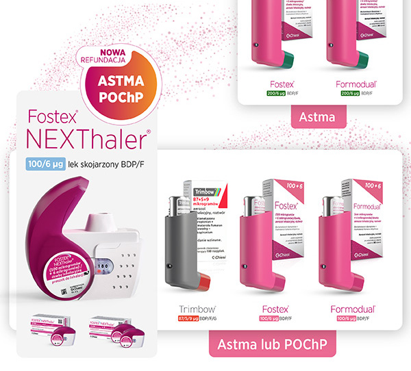

|
Rodzina |
air |
Fostex® NEXThaler® |
Trimbow® |
Fostex® |
Formodual® |
|
|
||||||
|
||||||
|
||||||
|

|  |
|
Nazwa produktu leczniczego: Fostex NEXThaler, (100 mikrogramów + 6 mikrogramów)/dawkę inhalacyjną, proszek do inhalacji. Skład jakościowy i ilościowy: Jedna dawka odmierzona, 10 mg proszku do inhalacji, zawiera: 100 mikrogramów beklometazonu dipropionianu bezwodnego oraz 6 mikrogramów formoterolu fumaranu dwuwodnego. Odpowiada to dawce dostarczonej (dawka opuszczająca ustnik) zawierającej 81,9 mikrograma beklometazonu dipropionianu bezwodnego i 5,0 mikrogramów formoterolu fumaranu dwuwodnego. Substancja pomocnicza o znanym działaniu: Jedna inhalacja zawiera 9,9 mg laktozy jednowodnej. Postać farmaceutyczna: Proszek do inhalacji. Wielodawkowy inhalator zawiera biały lub prawie biały proszek. Wskazania do stosowania: ASTMA Fostex NEXThaler jest wskazany w regularnym leczeniu astmy, wymagającym zastosowania produktu złożonego (wziewnego kortykosteroidu i długo działającego beta2-agonisty): u pacjentów z niewystarczającą kontrolą objawów choroby za pomocą kortykosteroidów wziewnych oraz stosowanego doraźnie krótko działającego beta2-agonisty, lub u pacjentów, u których uzyskano odpowiednią kontrolę objawów choroby za pomocą zarówno kortykosteroidów wziewnych, jak i długo działających beta2-agonistów. Produkt Fostex NEXThaler jest wskazany do stosowania u osób dorosłych. POChP: Leczenie objawowe pacjentów z ciężką postacią przewlekłej obturacyjnej choroby płuc (POChP) (wartość FEV1 < 50% wartości należnej) oraz nawracającymi w przeszłości zaostrzeniami, u których występują wyraźne objawy choroby pomimo regularnego leczenia długo działającymi lekami rozszerzającymi oskrzela. Dawkowanie i sposób podawania: ASTMA: Fostex NEXThaler jest przeznaczony do podania wziewnego. Fostex NEXThaler nie jest przeznaczony do stosowania w początkowym okresie leczenia astmy. Dawkowanie produktu Fostex NEXThaler należy ustalać indywidualne i należy dostosować je do stopnia ciężkości choroby. Należy wziąć to pod uwagę nie tylko w momencie rozpoczynania leczenia produktami złożonymi, ale także podczas ustalania dawki. Jeśli u pacjenta jest konieczne zastosowanie skojarzenia substancji czynnych w dawkach innych niż te dostępne w produkcie Fostex NEXThaler, należy przepisać odpowiednie dawki beta2-agonistów i (lub) kortykosteroidów do podania za pomocą osobnych inhalatorów. Z powodu rozmieszczenia w drogach oddechowych typowego dla cząsteczek o bardzo drobnych rozmiarach (ang. extrafine), konieczne jest dostosowanie dawkowania u pacjentów, u których zmieniono lek w postaci farmaceutycznej charakteryzującej się dużymi rozmiarami cząsteczek na Fostex NEXThaler w postaci proszku do inhalacji. U pacjentów zmieniających poprzednie leczenie należy brać pod uwagę, że całkowita dobowa dawka beklometazonu dipropionianu przy zastosowaniu produktu Fostex NEXThaler jest mniejsza niż w przypadku dotychczas stosowanych produktów zawierających beklometazonu dipropionian o większych rozmiarach cząsteczek i należy ją dostosować do indywidualnych potrzeb pacjenta. Jednak u pacjentów, u których zmieniono analogiczny lek w postaci roztworu w ciśnieniowym aerozolu inhalacyjnym na Fostex NEXThaler w postaci proszku do inhalacji, nie jest konieczne dostosowywanie dawkowania. Istnieją dwa sposoby leczenia: A. Terapia podtrzymująca: Produkt Fostex NEXThaler jest przyjmowany regularnie jako leczenie podtrzymujące, a dodatkowy, szybko działający lek rozszerzający oskrzela jest stosowany w razie potrzeby. B. Terapia podtrzymująca i doraźna: Produkt Fostex NEXThaler przyjmowany jest regularne jako leczenie podtrzymujące oraz, w razie potrzeby, w przypadku wystąpienia objawów astmy. A. Terapia podtrzymująca: Pacjentom należy doradzić, by zawsze mieli przy sobie inny szybko działający lek rozszerzający oskrzela do stosowania w razie potrzeby. Zalecane dawkowanie dla dorosłych w wieku 18 lat i starszych: Jedna lub dwie inhalacje dwa razy na dobę. Maksymalna dawka dobowa to 4 inhalacje na dobę. B. Terapia podtrzymująca i doraźna: Pacjenci przyjmują stosowaną zwykle dobową dawkę podtrzymującą produktu Fostex NEXThaler i dodatkowo, przyjmują w razie potrzeby produkt Fostex NEXThaler w przypadku wystąpienia objawów astmy. Pacjentów należy poinstruować, by zawsze mieli przy sobie produkt Fostex NEXThaler do zastosowania doraźnie. Terapię podtrzymującą i doraźną produktem Fostex NEXThaler należy rozważyć zwłaszcza u pacjentów z: niedostateczną kontrolą astmy i koniecznością stosowania leczenia doraźnego, zaostrzeniem astmy w przeszłości wymagającym interwencji medycznej. U pacjentów, którzy często przyjmują doraźnie dużą liczbę inhalacji produktu Fostex NEXThaler, konieczne jest dokładne monitorowanie zależnych od dawki działań niepożądanych. Zalecenia dotyczące dawkowania dla dorosłych w wieku 18 lat i powyżej: Zalecana dawka podtrzymująca to 1 inhalacja dwa razy na dobę (jedna inhalacja rano i jedna inhalacja wieczorem). Pacjenci powinni przyjąć jedną dodatkową inhalację w razie potrzeby, w przypadku wystąpienia objawów astmy. Jeśli objawy nadal utrzymują się po kilku minutach, należy jeszcze przyjąć dodatkową inhalację. Maksymalna dawka dobowa wynosi 8 inhalacji. Pacjentom wymagającym częstego przyjmowania inhalacji doraźnych w ciągu doby, należy zdecydowanie zalecić zwrócenie się o pomoc medyczną. Zalecane dawkowanie dla dzieci i młodzieży w wieku poniżej 18 lat: Nie określono bezpieczeństwa stosowania ani skuteczności produktu Fostex NEXThaler u dzieci i młodzieży w wieku poniżej 18 lat. Z powodów bezpieczeństwa, produktu Fostex Nexthaler nie należy stosować u dzieci w wieku 5-11 lat. Dane dostępne na temat stosowania w tej grupie wiekowej są podsumowane w sekcji 5.1 i 5.2. CHPL. Aktualne dane kliniczne dotyczące stosowania u młodzieży w wieku od 12 do 17 lat przedstawiono w punktach 4.8 i 5.1 CHPL, ale brak jest zaleceń dotyczących dawkowania. Pacjenci powinni być regularnie poddawani kontroli lekarskiej, co pozwoli utrzymać optymalne dawkowanie produktu Fostex NEXThaler, o którego zmianie może zadecydować jedynie lekarz. Należy stopniowo ustalić najmniejszą dawkę produktu zapewniającą skuteczną kontrolę objawów choroby. Po uzyskaniu kontroli objawów astmy za pomocą najmniejszej zalecanej dawki, kolejnym etapem leczenia może być próba zastosowania tylko kortykosteroidu wziewnego. Należy zalecić pacjentom, aby przyjmowali produkt Fostex NEXThaler codziennie, nawet w okresie bez objawów astmy. POChP. Dawka zalecana u dorosłych w wieku 18 lat i powyżej: Dwie inhalacje dwa razy na dobę. Szczególne grupy pacjentów: Nie ma konieczności dostosowywania dawkowania u pacjentów w podeszłym wieku. Brak dostępnych danych dotyczących stosowania produktu Fostex NEXThaler u pacjentów z zaburzeniami czynności wątroby lub nerek (patrz punkt 5.2 CHPL). Sposób podawania: Inhalator w produkcie Fostex NEXThaler to inhalator aktywowany wdechem. Wykazano, że pacjenci z astmą o średnim i dużym nasileniu oraz pacjenci z POChP są w stanie wytworzyć na tyle silny przepływ wdechowy, aby uruchomić uwalnianie dawki leku z inhalatora (patrz punkt 5.1 CHPL). Uwalnianie produktu Fostex NEXThaler nie zależy od natężenia przepływu powietrza, w zakresie przepływu wdechowego, jaki może być wygenerowany w inhalatorze przez tą populację pacjentów. W celu zapewnienia skutecznego leczenia konieczne jest prawidłowe zastosowanie inhalatora. Należy zalecić pacjentowi, by dokładnie przeczytał ulotkę dla pacjenta oraz przestrzegał instrukcji stosowania w niej zawartej. Jeżeli pacjent nie wykona inhalacji, liczba dawek widoczna w okienku na pojemniku nie powinna się zmienić po zamknięciu wieczka. Należy poinstruować pacjenta, aby otwierał wieczko inhalatora jedynie w razie potrzeby. W przypadku, gdy pacjent otworzył inhalator, lecz nie wykonał inhalacji, a następnie zamknął wieczko, dawka zostaje wycofana do pojemnika z proszkiem wewnątrz inhalatora i może być użyta bezpiecznie następna dawka. Po inhalacji pacjenci powinni wypłukać jamę ustną i gardło wodą lub umyć zęby (patrz punkt 4.4 CHPL). Specjalne ostrzeżenia i środki ostrożności dotyczące stosowania: W celu zakończenia leczenia, zaleca się stopniowe zmniejszanie dawki. Nie należy nagle przerywać leczenia. Leczenie astmy zazwyczaj powinno przebiegać z uwzględnieniem stopniowych zmian dawkowania, a monitorowanie reakcji pacjenta na leczenie powinno obejmować obserwację objawów klinicznych oraz badania czynnościowe płuc. Jeśli pacjent uzna, że leczenie jest nieskuteczne, powinien zgłosić się do lekarza prowadzącego. Zwiększenie częstości stosowania doraźnych leków rozszerzających oskrzela wskazuje na zaostrzenie choroby podstawowej i wymaga ponownej oceny leczenia astmy. Nagłe i postępujące pogorszenie kontroli objawów astmy może zagrażać życiu pacjenta, który powinien zostać poddany natychmiastowej kontroli lekarskiej. Należy rozważyć konieczność zwiększenia dawki kortykosteroidów w postaci wziewnej lub doustnej, lub zastosowania antybiotykoterapii w przypadku podejrzenia infekcji. Nie należy rozpoczynać leczenia produktem Fostex NEXThaler podczas zaostrzenia objawów choroby lub w przypadku znacznego pogorszenia się lub zaostrzenia astmy. Podczas leczenia produktem Fostex NEXThaler mogą wystąpić ciężkie działania niepożądane związane z astmą oraz zaostrzenie astmy. Jak w przypadku innych leków podawanych wziewnie, może wystąpić paradoksalny skurcz oskrzeli z natychmiastowym nasileniem świszczącego oddechu, kaszlu i duszności po podaniu leku. Należy wówczas natychmiast zastosować szybko działający wziewny lek rozszerzający oskrzela. Należy natychmiast przerwać podawanie produktu Fostex NEXThaler, ocenić stan pacjenta i, w razie konieczności, zastosować leczenie alternatywne. Produkt Fostex NEXThaler nie jest przeznaczony do rozpoczynania leczenia astmy. Należy poradzić pacjentom, by w leczeniu ostrych napadów astmy stosowali doraźnie krótko działający lek rozszerzający oskrzela, który powinni mieć zawsze przy sobie, albo produkt Fostex NEXThaler (dla pacjentów stosujących produkt Fostex NEXThaler jako terapię podtrzymującą i doraźną), albo inny, szybko działający lek rozszerzający oskrzela (dla pacjentów stosujących produkt Fostex NEXThaler tylko jako leczenie podtrzymujące). Należy przypomnieć pacjentom o konieczności przyjmowania produktu Fostex NEXThaler codziennie, zgodnie z zaleceniami lekarza, nawet w okresie bez objawów choroby. Doraźne inhalacje produktu Fostex NEXThaler należy stosować w przypadku wystąpienia objawów astmy, lecz nie są one przeznaczone do regularnego stosowania zapobiegawczo, np. przed wysiłkiem fizycznym. W takim przypadku należy rozważyć zastosowanie innego szybko działającego leku rozszerzającego oskrzela. Po opanowaniu objawów astmy, należy rozważyć stopniowe zmniejszanie dawki produktu Fostex NEXThaler. Ważna jest regularna obserwacja pacjentów w okresie zmniejszania dawki. Należy stosować najmniejszą skuteczną dawkę produktu Fostex NEXThaler (patrz punkt 4.2 CHPL). Zapalenie płuc u pacjentów z POChP. U pacjentów z POChP otrzymujących wziewne kortykosteroidy zaobserwowano zwiększenie częstości występowania zapalenia płuc, w tym zapalenia płuc wymagającego hospitalizacji. Istnieją pewne dowody na zwiększone ryzyko wystąpienia zapalenia płuc wraz ze zwiększeniem dawki steroidów, ale nie zostało to jednoznacznie wykazane we wszystkich badaniach. Nie ma jednoznacznych dowodów klinicznych na różnice między produktami zawierającymi wziewne kortykosteroidy, dotyczące stopnia ryzyka występowania zapalenia płuc. Lekarze powinni szczególnie wnikliwie obserwować pacjentów z POChP, czy nie rozwija się u nich zapalenie płuc, ponieważ kliniczne objawy takich zakażeń oraz zaostrzenia POChP często się nakładają. Do czynników ryzyka zapalenia płuc u pacjentów z POChP należą aktualne palenie tytoniu, starszy wiek, niski wskaźnik masy ciała (BMI) i ciężka postać POChP. Kortykosteroidy wziewne mogą spowodować wystąpienie działań ogólnoustrojowych, szczególnie, jeśli są one stosowane w dużych dawkach przez długi okres. Wystąpienie tych działań jest znacznie mniej prawdopodobne niż w przypadku stosowania doustnych kortykosteroidów. Możliwe działania ogólnoustrojowe obejmują: zespół Cushinga, wystąpienie cech typowych dla zespołu Cushinga, zahamowanie czynności nadnerczy, opóźnienie wzrostu u dzieci i młodzieży, zmniejszenie gęstości mineralnej kości, zaćmę, jaskrę, oraz rzadziej zespół zaburzeń psychicznych lub zmian zachowania, w tym nadmierną aktywność psychoruchową, zaburzenia snu, niepokój, depresję lub zachowanie agresywne (szczególnie u dzieci). Z tego względu, ważne jest, by zmniejszyć dawkę kortykosteroidu wziewnego do najmniejszej dawki zapewniającej skuteczną kontrolę objawów astmy. Długotrwałe leczenie dużymi dawkami kortykosteroidów wziewnych może spowodować zahamowanie czynności nadnerczy i ostry przełom nadnerczowy. Dzieci i młodzież w wieku poniżej 16 lat przyjmujące większe niż zalecane dawki beklometazonu dipropionianu mogą być szczególnie narażone na wystąpienie takiego działania. Ostry przełom nadnerczowy może być potencjalnie spowodowany przez: urazy, zabiegi chirurgiczne, infekcje i gwałtowne zmniejszenie dawkowania. Objawy są zazwyczaj nietypowe i mogą to być: brak łaknienia, ból brzucha, zmniejszenie masy ciała, zmęczenie, ból głowy, nudności, wymioty, niedociśnienie, zaburzenie świadomości, hipoglikemia i napady drgawkowe. W okresach nasilonego stresu lub przed planowanym zabiegiem chirurgicznym, należy rozważyć dodatkowe zastosowanie kortykosteroidów działających ogólnoustrojowo. U pacjentów, u których leczenie kortykosteroidami doustnymi zmieniono na leczenie kortykosteroidami wziewnymi, ryzyko zaburzeń czynności nadnerczy może utrzymywać się przez dłuższy okres. Ryzyko to może również dotyczyć pacjentów, którzy w przeszłości wymagali doraźnego podawania dużych dawek kortykosteroidów lub byli długotrwale leczeni dużymi dawkami wziewnych kortykosteroidów. Możliwość wystąpienia zaburzeń czynności nadnerczy należy zawsze brać pod uwagę w przypadku nagłych sytuacji lub planowanych zabiegów wywołujących stres; należy wówczas rozważyć podanie odpowiednich kortykosteroidów. Przed przystąpieniem do planowanych zabiegów chirurgicznych może być konieczna konsultacja ze specjalistą, który oceni stopień zaburzeń czynności nadnerczy. Należy zachować ostrożność podczas stosowania produktu Fostex NEXThaler u pacjentów z aktywną lub nieaktywną gruźlicą płuc oraz grzybiczymi i wirusowymi zakażeniami dróg oddechowych. Produkt Fostex NEXThaler należy stosować z zachowaniem ostrożności (z uwzględnieniem możliwości monitorowania stanu pacjenta) u pacjentów z zaburzeniami rytmu serca, szczególnie blokiem przedsionkowo-komorowym trzeciego stopnia i tachyarytmiami, samoistnym podzastawkowym zwężeniem aorty, przerostową kardiomiopatią z zawężeniem drogi odpływu, niedokrwienną chorobą serca, ciężką niewydolnością serca, ciężkim nadciśnieniem tętniczym i tętniakiem. Należy także zachować ostrożność w trakcie leczenia pacjentów z rozpoznanym lub podejrzewanym wydłużeniem odstępu QTc, zarówno wrodzonym, jak i wywołanym lekami (QTc > 0,44 sekund). Formoterol może powodować wydłużenie odstępu QTc. Należy także zachować ostrożność podczas stosowania produktu Fostex NEXThaler u pacjentów z tyreotoksykozą, cukrzycą, guzem chromochłonnym i niewyrównaną hipokaliemią. Leczenie beta2-agonistą może powodować potencjalnie ciężką hipokaliemię. Należy zachować szczególną ostrożność w leczeniu ciężkiej astmy, ponieważ ryzyko wystąpienia hipokaliemii może ulec zwiększeniu pod wpływem niedotlenienia. Hipokaliemia może także ulec nasileniu przez jednoczesne stosowanie innych leków, które mogą ją wywołać, takich jak pochodne ksantyny, steroidy i leki moczopędne (patrz punkt 4.5 CHPL). Zaleca się także zachować ostrożność w przypadku niestabilnej astmy, kiedy to istnieje możliwość stosowania doraźnie wielu leków rozszerzających oskrzela. Zaleca się, by w takich sytuacjach kontrolować stężenie potasu w surowicy. Inhalacja formoterolu może spowodować zwiększenie stężenia glukozy we krwi. Z tego względu należy ściśle kontrolować stężenie glukozy we krwi u pacjentów chorych na cukrzycę. Jeśli planowane jest znieczulenie za pomocą halogenowych środków znieczulających, należy upewnić się, że pacjent nie przyjmował produktu Fostex NEXThaler przez co najmniej 12 godzin przed rozpoczęciem znieczulenia, ze względu na ryzyko zaburzeń rytmu serca. W celu zmniejszenia ryzyka grzybiczego zakażenia jamy ustnej i gardła oraz dysfonii, należy zalecić pacjentom dokładne płukanie jamy ustnej i gardła wodą oraz mycie zębów po inhalacji przepisanej dawki. Ten produkt leczniczy zawiera laktozę. Laktoza zawiera niewielkie ilości białek mleka, które mogą powodować reakcje alergiczne. Lek nie powinien być stosowany u pacjentów z rzadko występującą dziedziczną nietolerancją galaktozy, brakiem laktazy lub zespołem złego wchłaniania glukozy-galaktozy. Zaburzenie widzenia może wystąpić w wyniku ogólnoustrojowego i miejscowego stosowania kortykosteroidów. Jeżeli u pacjenta wystąpią takie objawy, jak nieostre widzenie lub inne zaburzenia widzenia, należy rozważyć skierowanie go do okulisty w celu ustalenia możliwych przyczyn, do których może należeć zaćma, jaskra lub rzadkie choroby, takie jak centralna chorioretinopatia surowicza (CSCR), którą notowano po ogólnoustrojowym i miejscowym stosowaniu kortykosteroidów. Interakcje z innymi produktami leczniczymi i inne rodzaje interakcji: Metabolizm beklometazonu w mniejszym stopniu zależy od CYP3A niż w przypadku innych kortykosteroidów i interakcje są raczej mało prawdopodobne, jednak nie można wykluczyć wystąpienia działań ogólnoustrojowych po jednoczesnym stosowaniu silnie działających inhibitorów CYP3A (np. rytonawir, kobicystat). Z tego względu zaleca się ostrożność i właściwe monitorowanie podczas stosowania tych leków. U pacjentów z astmą należy unikać podawania leków beta-adrenolitycznych (w tym w postaci kropli do oczu). Jeśli z konieczności pacjenci z astmą otrzymują leki beta adrenolityczne, działanie formoterolu będzie zmniejszone lub zahamowane. Stosowanie innych leków beta-adrenergicz- nych może spowodować sumowanie się działania, dlatego też należy zachować ostrożność podczas stosowania formoterolu jednocześnie z teofiliną lub innymi lekami beta-adrenergicznymi. Jednoczesne podawanie z chinidyną, dyzopiramidem, prokainamidem, fenotiazynami, niektórymi lekami przeciwhistaminowymi (np. terfenadyną), inhibitorami monoaminooksydazy i trójpierścieniowymi lekami przeciwdepresyjnymi, może wydłużać odstęp QTc i zwiększać ryzyko komorowych zaburzeń rytmu. Ponadto, L-dopa, L-tyroksyna, oksytocyna i alkohol mogą zaburzać tolerancję serca na leki beta2-sympatykomimetyczne. Jednoczesne podawanie z inhibitorami monoaminooksydazy lub lekami o podobnych właściwościach, takimi jak furazolidon i prokarbazyna, może wywołać nadciśnienie tętnicze krwi. Istnieje zwiększone ryzyko wystąpienia zaburzeń rytmu serca u pacjentów jednocześnie poddawanych znieczuleniu za pomocą halogenowych węglowodorów. Jednoczesne podawanie z pochodnymi ksantyny, steroidami lub lekami moczopędnymi może nasilać działanie hipokaliemiczne beta2-agonistów (patrz punkt 4.4 CHPL). Hipokaliemia może zwiększyć skłonność do występowania zaburzeń rytmu serca u pacjentów leczonych glikozydami naparstnicy. Wpływ na ciążę i laktację: Produkt Fostex NEXThaler należy podawać w okresie ciąży tylko wówczas, gdy spodziewane korzyści przewyższają możliwe ryzyko. Podawanie produktu Fostex NEXThaler kobietom karmiącym piersią należy rozważyć wyłącznie w sytuacji, gdy spodziewane korzyści przewyższają możliwe ryzyko. Działania niepożądane: Częstość występowania działań niepożądanych określono następująco: bardzo często (≥1/10), często (≥1/100 do <1/10), niezbyt często (≥1/1 000 do <1/100), rzadko (≥1/10 000 do <1/1000) i bardzo rzadko (<1/10 000), nieznana (nie może być określona na podstawie dostępnych danych). Często: Zapalenie płuc (u pacjentów z POChP), drżenie. Niezbyt często: zapalenie jamy nosowej i gardła, kandydoza jamy ustnej, hipertriglicerydemia, ból głowy, częstoskurcz, bradykardia zatokowa, dławica piersiowa, niedokrwienie mięśnia sercowego, podrażnienie gardła, zaostrzenie astmy, duszność, ból gardła, dysfonia, kaszel, nudności, zmęczenie, drażliwość, wydłużenie odstępu QT w EKG, zmniejszone stężenie wolnego kortyzolu w moczu, zmniejszone stężenie kortyzolu we krwi, zwiększone stężenie potasu we krwi, zwiększone stężenie glukozy we krwi, słaba progresja załamka R w EKG. Częstość nieznana: nadmierna aktywność psychoruchowa, zaburzenia snu, niepokój, depresja, agresja, zmiany w zachowaniu (głównie u dzieci), nieostre widzenie. Zgłaszanie podejrzewanych działań niepożądanych: Osoby należące do fachowego personelu medycznego powinny zgłaszać wszelkie podejrzewane działania niepożądane za pośrednictwem Departamentu Monitorowania Niepożądanych Działań Produktów Leczniczych Urzędu Rejestracji Produktów Leczniczych, Wyrobów Medycznych i Produktów Biobójczych: Al. Jerozolimskie 181C, 02-222 Warszawa, tel.: + 48 22 49 21 301, faks: + 48 22 49 21 309. Strona internetowa: https://smz.ezdrowie.gov.pl. Działania niepożądane można również zgłaszać podmiotowi odpowiedzialnemu. Specjalne środki ostrożności podczas przechowywania: Przechowywać w oryginalnym opakowaniu w celu ochrony przed wilgocią. Inhalator należy wyjmować z saszetki tylko bezpośrednio przed użyciem. Przed pierwszym otwarciem saszetki: Brak specjalnych zaleceń dotyczących warunków przechowywania produktu leczniczego. Po pierwszym otwarciu saszetki: Nie przechowywać w temperaturze powyżej 25°C. Rodzaj i zawartość opakowania: Jedno opakowanie zawiera 1, 2 lub 3 inhalatory, z których każdy zawiera 1,50 g lub 2,22 g proszku do inhalacji, co zapewnia odpowiednio dostarczenie 120 dawek lub 180 dawek leku. Każdy inhalator umieszczony jest w szczelnie zamkniętej saszetce z termokurczliwej folii ochronnej wykonanej z PET/Al/PE (tereftalan polietylenu / aluminium / polietylen) lub z PA/Al/PE (poliamid/aluminium/polietylen). Nie wszystkie wielkości opakowań muszą znajdować się w obrocie. Uwaga: Przed zastosowaniem leku należy zapoznać się z Charakterystyką Produktu Leczniczego dostępną w Chiesi Poland Sp. z o.o., Al. Jerozolimskie 134, 02-305 Warszawa, tel.: (22) 620 14 21, faks: +48 22 652 37 79, e-mail: info-pl@chiesi.com oraz na stronie internetowej www.chiesi.pl. Charakterystyka Produktu Leczniczego jest dokumentem podlegającym zmianom i aktualizacji. Przed użyciem niniejszej broszury prosimy upewnić się, że korzystacie Państwo z jej aktualnej wersji. Data ostatniej aktualizacji tekstu ChPL: 19.08.2020 r. Podmiot odpowiedzialny: Chiesi Farmaceutici S.p.A., Via Palermo 26/A, 43122 Parma, Włochy. Pozwolenie nr 22765. wydane przez Prezesa URPLWMiPB. Kategoria dostępności: Kategoria dostępności: Produkt leczniczy wydawany z przepisu lekarza-Rp. Cena: Fostex Nexthaler, Wielkość opakowania: 1 pojemnik/180 dawek, Urzędowa cena detaliczna: 165,91 zł1 , Maksymalna dopłata świadczeniobiorcy: 67,22 zł. 1. Wielkość opakowania: 2 pojemniki/180 dawek, Cena detaliczna: 320,41 zł1 , Cena dla pacjenta: 123,04 zł
Nazwa produktu leczniczego: Trimbow, 87 µg + 5 µg + 9 µg, aerozol inhalacyjny, roztwór. Nazwa powszechnie stosowana: Beclometasoni dipropionas + Formoteroli fumaras + Glycopyrronii bromidum. Skład jakościowy i ilościowy: Każda dostarczona dawka (rozpylenie opuszczające ustnik) zawiera 87 µg beklometazonu dipropionianu, 5 µg formoterolu fumaranu dwuwodnego i 9 µg glikopironium (w postaci 11 µg glikopironiowego bromku). Każda odmierzona dawka (rozpylenie opuszczające zawór) zawiera 100 µg beklometazonu dipropionianu, 6 µg formoterolu fumaranu dwuwodnego i 10 µg glikopironium (w postaci 12,5 µg glikopironiowego bromku). Substancja pomocnicza o znanym działaniu Trimbow zawiera 8,856 mg etanolu na rozpylenie. Działanie: Trimbow zawiera beklometazonu dipropionian, formoterol i glikopironium w postaci roztworu tworzącego aerozol o bardzo drobnych cząstkach o średnicy aerodynamicznej cząstki odpowiadającej medianie rozkładu masowego wynoszącej około 1,1 µm, ze zdolnością do jednoczesnej depozycji wszystkich trzech składników. Beklometazonu dipropionian podawany wziewnie w zalecanych dawkach wykazuje glikokortykosteroidowe działanie przeciwzapalne w obrębie płuc. Formoterol jest selektywnym agonistą receptorów beta-2-adrenergicznych, powodującym rozkurcz mięśni gładkich oskrzeli u pacjentów z odwracalną obturacją dróg oddechowych. Glikopironium jest długo działającym antagonistą receptora muskarynowego (substancją o działaniu przeciwcholinergicznym), o dużym powinowactwie, podawanym wziewnie w leczeniu w celu rozszerzenia oskrzeli. Wskazania do stosowania: Przewlekła obturacyjna choroba płuc (POChP): Leczenie podtrzymujące u pacjentów dorosłych z umiarkowaną lub ciężką POChP, u których nie uzyskuje się odpowiedniego efektu leczenia podczas jednoczesnego stosowania kortykosteroidu wziewnego i długo działającego agonisty receptorów beta-2 lub jednoczesnego stosowania długo działającego agonisty receptorów beta-2 i długo działającego antagonisty receptorów muskarynowych. Astma: Leczenie podtrzymujące astmy u pacjentów z niewystarczającą kontrolą objawów choroby po zastosowaniu produktu złożonego z długo działającego agonisty receptorów beta-2 i średnich dawek kortykosteroidu wziewnego, u których wystąpiło jedno lub więcej zaostrzeń astmy w ciągu poprzedniego roku. Dawkowanie i sposób podawania: Zalecana dawka to dwie inhalacje podawane dwa razy na dobę. Maksymalna dawka to dwie inhalacje podawane dwa razy na dobę. Pacjentom należy zalecić, aby przyjmowali produkt leczniczy Trimbow codziennie, nawet w przypadku braku objawów. Jeśli w okresie między dawkami wystąpią objawy, należy zastosować leczenie wziewnym, krótko działającym agonistą receptorów beta-2 w celu natychmiastowego złagodzenia objawów. Astma - Wybierając moc dawki początkowej produktu leczniczego Trimbow (87/5/9 mikrogramów lub 172/5/9 mikrogramów), należy wziąć pod uwagę nasilenie choroby u pacjenta, uprzednio stosowane leczenie astmy, w tym dawkę kortykosteroidów wziewnych, jak również aktualną kontrolę objawów astmy oraz ryzyko zaostrzenia w przyszłości. Stopniowe zmniejszanie dawki - Lekarz powinien regularnie ponownie oceniać stan pacjentów, aby zapewnić, że stosowane u nich dawki beklometazonu/formoterolu/glikopironium pozostają optymalne i są zmieniane wyłącznie na podstawie zalecenia lekarza. Dawki należy zmniejszyć do najmniejszych dawek, które zapewniają utrzymanie skutecznej kontroli objawów astmy. Szczególne grupy pacjentów: Osoby w podeszłym wieku - Nie ma konieczności modyfikacji dawki u pacjentów w podeszłym wieku (65 lat i starszych). Zaburzenia czynności nerek - U pacjentów z lekkimi [współczynnik przesączania kłębuszkowego (ang. glomerular filtration rate, GFR) od ≥50 do <80 ml/min/1,73 m2] do umiarkowanych (GFR od ≥30 do <50 ml/min/1,73 m2) zaburzeniami czynności nerek można stosować produkt leczniczy Trimbow w zalecanej dawce. U pacjentów z ciężkimi zaburzeniami czynności nerek (GFR <30 ml/min/1,73 m2) lub schyłkową chorobą nerek wymagającą dializy (GFR <15 ml/min/1,73 m2), zwłaszcza związanymi ze znacznym zmniejszeniem masy ciała, stosowanie produktu leczniczego należy rozważyć tylko wtedy, gdy przewidywane korzyści przewyższają możliwe ryzyko Zaburzenia czynności wątroby. Brak istotnych danych dotyczących stosowania produktu leczniczego Trimbow u pacjentów z ciężkimi zaburzeniami czynności wątroby (klasy C wg skali Childa-Pugha), dlatego należy zachować ostrożność podczas stosowania produktu leczniczego u tych pacjentów. Dzieci i młodzież POChP - Stosowanie produktu leczniczego Trimbow u dzieci i młodzieży (w wieku poniżej 18 lat) nie jest właściwe we wskazaniu POChP. Astma - Nie określono dotychczas bezpieczeństwa stosowania ani skuteczności produktu leczniczego Trimbow u dzieci i młodzieży (w wieku poniżej 18 lat). Dane nie są dostępne. Sposób podawania: Do podawania wziewnego. W przypadku pojemnika ciśnieniowego zawierającego 180 rozpyleń, każdorazowe naciśnięcie pojemnika ciśnieniowego przez pacjenta powoduje rozpylenie roztworu, a wskaźnik dawek nieznacznie się obraca; liczba pozostałych rozpyleń jest wskazywana w odstępach co 20. Przeciwwskazania: Nadwrażliwość na substancje czynne lub na którąkolwiek substancję pomocniczą. Specjalne ostrzeżenia i środki ostrożności dotyczące stosowania: Nie stosować w stanach ostrych. Ten produkt leczniczy nie jest wskazany w leczeniu ostrych epizodów skurczu oskrzeli lub w leczeniu ostrego zaostrzenia (tzn. w terapii ratunkowej). Nadwrażliwość: Po podaniu produktu leczniczego Trimbow® zgłaszano natychmiastowe reakcje nadwrażliwości. Jeśli wystąpią objawy wskazujące na reakcje alergiczne, zwłaszcza obrzęk naczynioruchowy (w tym trudności w oddychaniu lub połykaniu, obrzęk języka, warg i twarzy), pokrzywka lub wysypka skórna, należy natychmiast przerwać stosowanie produktu leczniczego Trimbow i rozpocząć leczenie alternatywne. Paradoksalny skurcz oskrzeli: Paradoksalny skurcz oskrzeli może objawiać się natychmiastowym nasileniem świszczącego oddechu i duszności po podaniu dawki. Taki stan należy niezwłocznie leczyć za pomocą szybko działającego wziewnego leku rozszerzającego oskrzela (lek doraźny). Należy natychmiast przerwać stosowanie produktu leczniczego Trimbow, ocenić stan pacjenta i w razie konieczności, rozpocząć leczenie alternatywne. Nasilanie się choroby:Zaleca się nie przerywać nagle leczenia produktem leczniczym Trimbow. Jeśli pacjenci uważają, że leczenie jest nieskuteczne, powinni kontynuować leczenie i zwrócić się do lekarza o poradę. Zwiększenie częstości stosowania doraźnych leków rozszerzających oskrzela wskazuje na nasilenie choroby podstawowej i konieczna jest ponowna ocena sposobu leczenia. Nagłe lub postępujące nasilenie objawów może zagrażać życiu, dlatego pacjent powinien pilnie zostać zbadany przez lekarza. Wpływ na układ krążenia: Należy zachować ostrożność podczas stosowania produktu leczniczego Trimbow u pacjentów z zaburzeniami rytmu serca, zwłaszcza z blokiem przedsionkowo-komorowym trzeciego stopnia i tachyarytmią [przyspieszone i (lub) nieregularne bicie serca], idiopatycznym podzastawkowym zwężeniem aorty, kardiomiopatią przerostową ze zwężeniem drogi odpływu z lewej komory, ciężką chorobą serca (zwłaszcza ostrym zawałem mięśnia sercowego, chorobą niedokrwienną serca, zastoinową niewydolnością serca), okluzyjnymi chorobami naczyniowymi (zwłaszcza miażdżycą tętnic), nadciśnieniem tętniczym i tętniakiem. Należy również zachować ostrożność podczas leczenia pacjentów ze stwierdzonym lub podejrzewanym wydłużeniem odstępu QTc (QTc > 450 milisekund u mężczyzn lub > 470 milisekund u kobiet), wrodzonym lub wywołanym przez produkty lecznicze, ponieważ tacy pacjenci zostali wykluczeni z badań klinicznych nad produktem leczniczym Trimbow. Jeśli planuje się znieczulenie za pomocą halogenowych środków znieczulających, należy upewnić się, że pacjent nie przyjmował produktu leczniczego Trimbow przez co najmniej 12 godzin przed rozpoczęciem znieczulenia, ze względu na ryzyko zaburzeń rytmu serca. Należy ponadto zachować ostrożność podczas stosowania produktu leczniczego Trimbow u pacjentów z tyreotoksykozą, cukrzycą, guzem chromochłonnym i nieleczoną hipokaliemią. Zapalenie płuc u pacjentów z POChP: U pacjentów z POChP otrzymujących wziewnie kortykosteroidy zaobserwowano zwiększenie częstości występowania zapalenia płuc, w tym zapalenia płuc wymagającego hospitalizacji. Istnieją pewne dowody na zwiększone ryzyko wystąpienia zapalenia płuc wraz ze zwiększaniem dawki steroidów, ale nie zostało to jednoznacznie wykazane we wszystkich badaniach. Nie ma jednoznacznych dowodów klinicznych na różnice w obrębie grupy między produktami zawierającymi wziewne kortykosteroidy, dotyczące stopnia ryzyka występowania zapalenia płuc. Lekarze powinni szczególnie wnikliwie obserwować pacjentów z POChP, czy nie rozwija się u nich zapalenie płuc, ponieważ kliniczne objawy takich zakażeń oraz zaostrzenia POChP często się nakładają. Do czynników ryzyka zapalenia płuc u pacjentów z POChP należą aktualne palenie tytoniu, starszy wiek, niski wskaźnik masy ciała (BMI) i ciężka postać POChP. Ogólnoustrojowe działania kortykosteroidów: Działania ogólnoustrojowe mogą wystąpić podczas wziewnego przyjmowania każdego z kortykosteroidów, szczególnie przepisywanych w dużych dawkach do stosowania przez długi okres. Dawka dobowa produktu leczniczego Trimbow odpowiada średniej dawce kortykosteroidu podawanego wziewnie; ponadto wystąpienie tych działań jest znacznie mniej prawdopodobne niż podczas doustnego przyjmowania kortykosteroidów. Możliwe działania ogólnoustrojowe obejmują: zespół Cushinga, objawy odpowiadające zespołowi Cushinga, zahamowanie czynności kory nadnerczy, opóźnienie wzrostu, zmniejszenie gęstości mineralnej kości, zaćma, jaskra i – rzadziej – szereg działań związanych z psychiką lub zachowaniem, w tym nadaktywność psychoruchowa, zaburzenia snu, lęk, depresja lub agresja (zwłaszcza u dzieci). Z tego względu ważne jest regularne badanie pacjenta i zmniejszenie dawki kortykosteroidu wziewnego do najmniejszej dawki, która zapewnia utrzymanie skutecznej kontroli astmy. Produkt leczniczy Trimbow należy podawać ostrożnie pacjentom z aktywną lub nieaktywną gruźlicą płuc, zakażeniami grzybiczymi i wirusowymi dróg oddechowych. Hipokaliemia: Leczenie agonistą receptorów beta-2 może powodować potencjalnie ciężką hipokaliemię. Może się to przyczynić do wystąpienia działań niepożądanych dotyczących układu krążenia. Szczególną ostrożność zaleca się u pacjentów z ciężką chorobą, ponieważ działanie to może się nasilać pod wpływem niedotlenienia. Hipokaliemia może się również nasilić wskutek jednoczesnego stosowania innych produktów leczniczych mogących powodować hipokaliemię, takich jak pochodne ksantyny, steroidy i leki moczopędne. Zaleca się również zachowanie ostrożności, jeśli pacjenci stosują doraźnie kilka leków rozszerzających oskrzela. Zaleca się, by w takich sytuacjach kontrolować stężenie potasu w surowicy. Hiperglikemia: Wdychanie formoterolu może powodować zwiększenie stężenia glukozy we krwi. Dlatego podczas leczenia pacjentów z cukrzycą należy kontrolować stężenie glukozy we krwi zgodnie z ustalonymi wytycznymi. Działanie przeciwcholinergiczne: Należy zachować ostrożność podczas stosowania glikopironium u pacjentów z jaskrą z wąskim kątem przesączania, rozrostem gruczołu krokowego lub zatrzymaniem moczu. Pacjentów należy poinformować o podmiotowych i przedmiotowych objawach ostrej jaskry z wąskim kątem przesączania oraz o konieczności niezwłocznego przerwania stosowania produktu leczniczego Trimbow i skontaktowania się z lekarzem, jeśli jakiekolwiek z tych objawów podmiotowych i przedmiotowych wystąpią. Ponadto, z powodu działania przeciwcholinergicznego glikopironium nie zaleca się jednoczesnego długotrwałego podawania produktu leczniczego Trimbow z innymi produktami leczniczymi zawierającymi substancje przeciwcholinergiczne. Pacjenci z ciężkimi zaburzeniami czynności nerek: U pacjentów z ciężkimi zaburzeniami czynności nerek, w tym ze schyłkową chorobą nerek wymagającą dializy, zwłaszcza związanymi ze znacznym zmniejszeniem masy ciała, produkt leczniczy Trimbow należy stosować tylko wtedy, gdy przewidywane korzyści przewyższają możliwe ryzyko. Należy kontrolować, czy u takich pacjentów nie występują działania niepożądane. Pacjenci z ciężkimi zaburzeniami czynności wątroby: U pacjentów z ciężkimi zaburzeniami czynności wątroby produkt leczniczy Trimbow należy stosować tylko wtedy, gdy przewidywane korzyści przewyższają możliwe ryzyko. Należy kontrolować, czy u takich pacjentów nie występują działania niepożądane. Stosowanie z komorą inhalacyjną: Z danych farmakokinetycznych dotyczących pojedynczej dawki wynika, że w porównaniu z rutynowym zastosowaniem bez komory inhalacyjnej, podczas stosowania produktu leczniczego Trimbow z komorą inhalacyjną AeroChamber Plus zwiększa się całkowity wpływ glikopironium na organizm (AUC0-t). Dotyczące bezpieczeństwa stosowania dostępne dane pochodzące z długotrwałych badań klinicznych nie wzbudzają jednak żadnych istotnych obaw dotyczących bezpieczeństwa stosowania. Zapobieganie zakażeniom jamy ustnej i gardła: W celu zmniejszenia ryzyka wystąpienia drożdżycy jamy ustnej i gardła, pacjentom należy zalecić wypłukanie jamy ustnej i gardła wodą, bez jej połknięcia, lub umycie zębów szczoteczką po inhalacji zalecanej dawki. Zaburzenia widzenia: Zaburzenie widzenia może wystąpić w wyniku ogólnoustrojowego i miejscowego stosowania kortykosteroidów. Jeżeli u pacjenta wystąpią takie objawy, jak nieostre widzenie lub inne zaburzenia widzenia, należy rozważyć skierowanie go do okulisty w celu ustalenia możliwych przyczyn, do których może należeć zaćma, jaskra lub rzadkie choroby, takie jak centralna chorioretinopatia surowicza (CSCR), którą notowano po ogólnoustrojowym i miejscowym stosowaniu kortykosteroidów. Interakcje z innymi produktami leczniczymi i inne rodzaje interakcji Interakcje farmakokinetyczne: Ponieważ glikopironium jest eliminowane głównie przez nerki, możliwa jest interakcja z produktami leczniczymi wpływającymi na mechanizmy wydalania nerkowego (np. cymetydyny). Metabolizm beklometazonu w mniejszym stopniu zależy od CYP3A niż w przypadku innych kortykosteroidów i interakcje są raczej mało prawdopodobne, jednak nie można wykluczyć wystąpienia działań ogólnoustrojowych po jednoczesnym stosowaniu silnie działających inhibitorów CYP3A (np. rytonawir, kobicystat). Z tego względu zaleca się ostrożność i właściwe monitorowanie podczas stosowania tych produktów leczniczych. Interakcje farmakodynamiczne: Związane z formoterolem - U pacjentów stosujących formoterol wziewnie należy unikać podawania niekardioselektywnych leków beta-adrenolitycznych (w tym w postaci kropli do oczu). Ryzyko zaburzeń rytmu serca zwiększa się u pacjentów poddawanych jednocześnie znieczuleniu za pomocą halogenowych węglowodorów. Podczas jednoczesnego stosowania z innymi lekami beta-adrenergicznymi może następować sumowanie się działania; należy więc zachować ostrożność podczas przepisywania formoterolu do stosowania jednocześnie z innymi lekami beta-adrenergicznymi. Jednoczesne leczenie inhibitorami monoaminooksydazy lub produktami leczniczymi o podobnych właściwościach, takimi jak furazolidon i prokarbazyna, może wywołać nadciśnienie tętnicze. Jednoczesne leczenie pochodnymi ksantyny, steroidami lub lekami moczopędnymi może nasilać działanie hipokaliemiczne agonistów receptorów beta-2. Hipokaliemia może zwiększyć skłonność do występowania zaburzeń rytmu serca u pacjentów leczonych glikozydami naparstnicy. Związane z glikopironium - Nie badano jednoczesnego długotrwałego podawania produktu leczniczego Trimbow z innymi produktami leczniczymi zawierającymi substancje przeciwcholinergiczne i dlatego takie stosowanie nie jest zalecane. Wpływ na płodność, ciążę i laktację: Brak doświadczenia lub dowodów dotyczących kwestii bezpieczeństwa stosowania gazu nośnego norfluranu (HFA134a) w okresie ciąży lub laktacji u ludzi. Ciąża: Brak danych lub istnieją tylko ograniczone dane dotyczące stosowania produktu leczniczego Trimbow u kobiet w okresie ciąży. Produkt leczniczy Trimbow należy stosować w okresie ciąży tylko wtedy, gdy spodziewane korzyści dla pacjentki przewyższają możliwe ryzyko dla płodu. Karmienie piersią Brak istotnych danych klinicznych dotyczących stosowania produktu leczniczego Trimbow podczas karmienia piersią u ludzi. Płodność: Nie przeprowadzono swoistych badań nad produktem leczniczym Trimbow, dotyczących bezpieczeństwa stosowania w odniesieniu do płodności u ludzi. Badania na zwierzętach wykazały zaburzenie płodności. Produkt leczniczy Trimbow należy stosować w okresie ciąży tylko wtedy, gdy spodziewane korzyści dla pacjentki przewyższają możliwe ryzyko dla płodu. Wpływ na zdolność prowadzenia pojazdów i obsługiwania maszyn: Produkt leczniczy Trimbow nie ma wpływu lub wywiera nieistotny wpływ na zdolność prowadzenia pojazdów i obsługiwania maszyn. Działania niepożądane: Częstość występowania działań niepożądanych została określona w następujący sposób: bardzo często (≥1/10); często (≥1/100 do <1/10); niezbyt często (≥1/1 000 do <1/100); rzadko (≥1/10 000 do <1/1 000); bardzo rzadko (<1/10 000) i częstość nieznana (nie może być określona na podstawie dostępnych danych). Często: Zapalenie płuc (u pacjentów z POChP), zapalenie gardła, kandydoza jamy ustnej, zakażenie dróg moczowych, zapalenie błony śluzowej nosa i gardła, ból głowy, dysfonia. Niezbyt często: Grypa, zakażenie grzybicze jamy ustnej, kandydoza jamy ustnej i gardła, kandydoza przełyku, grzybicze zapalenie jamy ustnej i gardła, zapalenie zatok przynosowych, zapalenie błony śluzowej nosa, zapalenie błony śluzowej żołądka i jelit, kandydoza sromu i pochwy, granulocytopenia, alergiczne zapalenie skóry, hipokaliemia, hiperglikemia, niepokój, drżenie, zawroty głowy, zaburzenia smaku, niedoczulica, zapalenie trąbki słuchowej, migotanie przedsionków, wydłużenie odstępu QTw elektrokardiogramie, częstoskurcz, tachyarytmia, kołatanie serca, przekrwienie, uderzenie gorąca, nadciśnienie tętnicze, stan astmatyczny, kaszel, kaszel z odkrztuszaniem, podrażnienie gardła, krwawienie z nosa, zaczerwienienie gardła, biegunka, suchość błony śluzowej jamy ustnej, zaburzenia połykania, nudności, niestrawność, uczucie pieczenia warg, próchnica zębów, (aftowe) zapalenie jamy ustnej, wysypka, pokrzywka, świąd, nadmierne pocenie się, kurcze mięśni, ból mięśni, ból kończyny, ból mięśniowo-szkieletowy w klatce piersiowej, zmęczenie, zwiększenie stężenia białka C-reaktywnego, zwiększenie liczby płytek krwi, zwiększenie stężenia wolnych kwasów tłuszczowych, zwiększenie stężenia insuliny we krwi, zwiększenie stężenia ciał ketonowych we krwi, zmniejszenie stężenia kortyzolu. Rzadko: Zakażenie (grzybicze) dolnych dróg oddechowych, reakcje nadwrażliwości, w tym rumień, obrzęk warg, twarzy, oczu i gardła, zmniejszenie łaknienia, bezsenność, hipersomnia, dławica piersiowa (stabilna i niestabilna), dodatkowe pobudzenia (komorowe i nadkomorowe), rytm węzłowy, bradykardia zatokowa, wynaczynienie krwi, paradoksalny skurcz oskrzeli, zaostrzenie astmy, ból jamy ustnej i gardła, zapalenie gardła, suchość w gardle, obrzęk naczynioruchowy, bolesne oddawanie moczu, zatrzymanie moczu, zapalenie nerek, astenia, zwiększenie ciśnienia krwi, zmniejszenie ciśnienia krwi. Bardzo rzadko: Małopłytkowość, zahamowanie czynności nadnerczy, jaskra, zaćma, duszność, opóźnienie wzrostu, obrzęk obwodowy, zmniejszenie gęstości kości. Częstość nieznana: Nadmierna aktywność psychoruchowa, zaburzenia snu, lęk, depresja, agresja, zmiany w zachowaniu (głównie u dzieci), nieostre widzenie. Zgłaszanie podejrzewanych działań niepożądanych: Osoby należące do fachowego personelu medycznego powinny zgłaszać wszelkie podejrzewane działania niepożądane za pośrednictwem krajowego systemu zgłaszania. Działania niepożądane można również zgłaszać podmiotowi odpowiedzialnemu. Specjalne środki ostrożności podczas przechowywania: Przed wydaniem: Przechowywać w lodówce (2°C-8°C). Nie zamrażać. Nie wystawiać na działanie temperatury wyższej niż 50°C. Okres ważności: Pojemnik ciśnieniowy zawierający 180 dawek: 22 miesiące. Stabilność chemiczną i fizyczną podczas użycia wykazano dla 4 miesięcy w temperaturze 25°C. Po wydaniu produkt leczniczy można przechowywać maksymalnie przez 4 miesiące w temperaturze do 25°C. Rodzaj i zawartość opakowania: Pojemnik ciśnieniowy (powlekany aluminium) z zaworem dozującym. Pojemnik ciśnieniowy jest umieszczany w inhalatorze polipropylenowym, który zawiera ustnik i wskaźnik dawek (opakowanie zawierające 180 dawek w pojemniku pod ciśnieniem) i jest wyposażony w polipropylenową osłonę ustnika. Uwaga: Przed zastosowaniem leku należy zapoznać się z Charakterystyką Produktu Leczniczego dostępną w Chiesi Poland Sp. z o.o., Al. Jerozolimskie 134, 02-305 Warszawa, tel.: (22) 620 14 21, faks: +48 22 652 37 79, e-mail: info-pl@chiesi.com oraz na stronie internetowej www.chiesi.pl. Charakterystyka Produktu Leczniczego jest dokumentem podlegającym zmianom i aktualizacji. Przed użyciem niniejszej broszury prosimy upewnić się, że korzystacie Państwo z jej aktualnej wersji. Data ostatniej aktualizacji tekstu ChPL: 24.03.2022 r. Podmiot Odpowiedzialny: Chiesi Farmaceutici S.p.A. Via Palermo 26/A 43122 Parma Włochy. Numery pozwoleń na dopuszczenie do obrotu: EU/1/17/1208/001, EU/1
NAZWA PRODUKTU LECZNICZEGO: Fostex (100µg + 6 µg)/dawkę, Fostex (200 µg + 6 µg)/dawkę inhalacyjną, Formodual (100 µg + 6 µg)/dawkę, Formodual (200 µg + 6 µg)/dawkę inhalacyjną, aerozol inhalacyjny, roztwór. SKŁAD JAKOŚCIOWY I ILOŚCIOWY: Jedna dawka odmierzona (z zaworu) zawiera: Fostex/ Formodual (100 µg + 6 µg): 100 mikrogramów beklometazonu dipropionianu (Beclometasoni dipropionas) oraz 6 mikrogramów formoterolu fumaranu dwuwodnego (Formoteroli fumaras dihydricus). Odpowiada to dawce dostarczonej (z pompki rozpylającej) zawierającej 84,6 mikrograma beklometazonu dipropionianu i 5,0 mikrogramów formoterolu fumaranu dwuwodnego. Fostex/Formodual (200 µg + 6 µg): 200 µg beklometazonu dipropionianu (Beclometasoni dipropionas) oraz 6 µg formoterolu fumaranu dwuwodnego (Formoteroli fumaras dihydricus). Odpowiada to dawce dostarczonej (z pompki rozpylającej) zawierającej 177,7 µg beklometazonu dipropionianu i 5,1 µg formoterolu fumaranu dwuwodnego. MECHANIZM DZIAŁANIA I DZIAŁANIE FARMAKODYNAMICZNE: Fostex/Formodual zawiera beklometazonu dipropionian i formoterol. Te dwie substancje czynne wykazują różny sposób działania. Podobnie jak w przypadku innych skojarzeń kortykosteroidów wziewnych i agonisty receptorów beta2-adrenergicznych, łączne działanie tych składników powoduje zmniejszenie częstości występowania zaostrzeń astmy. WSKAZANIA DO STOSOWANIA: Produkt leczniczy Fostex/Formodual (100 µg + 6 µg) i Fostex/Formodual (200 µg + 6 µg) jest wskazany w regularnym leczeniu astmy, wymagającym zastosowania produktu złożonego (wziewnego kortykosteroidu i długo działającego beta2-agonisty): u pacjentów z niewystarczającą kontrolą objawów choroby za pomocą kortykosteroidów wziewnych oraz stosowanego doraźnie szybko działającego, wziewnego beta2-agonisty lub u pacjentów, u których uzyskano odpowiednią kontrolę objawów choroby za pomocą zarówno kortykosteroidów wziewnych, jak i długo działających beta2-agonistów. Produkt leczniczy Fostex/Formodual jest przeznaczony do stosowania u dorosłych. Produkt leczniczy Fostex/Formodual (100 µg + 6 µg) jest wskazany w leczeniu objawowym pacjentów z ciężką postacią przewlekłej obturacyjnej choroby płuc (POChP) (wartość FEV1 < 50% wartości należnej) oraz nawracającymi w przeszłości zaostrzeniami, u których występują wyraźne objawy choroby pomimo regularnego leczenia długo działającymi lekami rozszerzającymi oskrzela. DAWKOWANIE I SPOSÓB PODAWANIA: ASTMA. Fostex/Formodual nie jest przeznaczony do stosowania w początkowym okresie leczenia astmy. Dawkowanie składników produktu Fostex/Formodual należy ustalać indywidualne i należy dostosować je do stopnia ciężkości choroby. Należy wziąć to pod uwagę nie tylko w momencie rozpoczynania leczenia produktami złożonymi, ale także podczas ustalania dawki. Jeśli u pacjenta jest konieczne zastosowanie skojarzenia substancji czynnych w dawkach innych niż te dostępne w produkcie Fostex/Formodual, należy przepisać odpowiednie dawki beta2-agonistów i (lub) kortykosteroidów do podania za pomocą osobnych inhalatorów. Beklometazonu dipropionian zawarty w produkcie Fostex/Formodual ulega rozmieszczeniu w drogach oddechowych charakterystycznemu dla cząsteczek o bardzo drobnych rozmiarach (ang. extrafine), dzięki czemu osiągane jest silniejsze działanie terapeutyczne niż w przypadku postaci beklometazonu dipropionianu o cząsteczkach większych rozmiarów (100 mikrogramów beklometazonu dipropionianu bardzo drobnocząsteczkowego zawartego w produkcie leczniczym Fostex/Formodual jest równoważne 250 mikrogramom beklometazonu dipropionianu o większych cząsteczkach). Z tego względu, całkowita dawka dobowa beklometazonu dipropionianu przyjmowana w produkcie Fostex/Formodual powinna być mniejsza niż całkowita dawka dobowa beklometazonu dipropionianu przyjmowana w produktach zawierających beklometazonu dipropionian o większych cząsteczkach. Należy wziąć to pod uwagę u pacjentów, u których zmieniono leczenie beklometazonu dipropionianem o dużych rozmiarach cząsteczek na leczenie produktem Fostex/Formodual; dawkę beklometazonu dipropionianu należy zmniejszyć i dostosować do indywidualnych potrzeb pacjenta. Fostex/Formodual (100 µg + 6 µg): Istnieją dwa sposoby leczenia. Terapia podtrzymująca: Produkt Fostex/Formodual jest przyjmowany regularnie jako leczenie podtrzymujące, a dodatkowy, szybko działający lek rozszerzający oskrzela jest stosowany w razie potrzeby. Terapia podtrzymująca i doraźna: Produkt Fostex/Formodual przyjmowany jest regularne jako leczenie podtrzymujące oraz, w razie potrzeby, w przypadku wystąpienia objawów astmy. Terapia podtrzymująca: Pacjentom należy doradzić, by zawsze mieli przy sobie inny szybko działający lek rozszerzający oskrzela do stosowania w razie potrzeby. Zalecenia dotyczące dawkowania dla dorosłych w wieku 18 lat i powyżej: Jedna lub dwie inhalacje dwa razy na dobę. Maksymalna dawka dobowa to 4 inhalacje. Terapia podtrzymująca i doraźna: Pacjenci przyjmują stosowaną zwykle dobową dawkę podtrzymującą produktu Fostex/Formodual i dodatkowo, przyjmują w razie potrzeby produkt Fostex/Formodual w przypadku wystąpienia objawów astmy. Pacjentów należy poinstruować, by zawsze mieli przy sobie produkt Fostex/Formodual do zastosowania doraźnie. Terapię podtrzymującą i doraźną produktem Fostex/Formodual należy rozważyć zwłaszcza u pacjentów z: niedostateczną kontrolą astmy i koniecznością stosowania leczenia doraźnego; zaostrzeniem astmy w przeszłości wymagającym interwencji medycznej. U pacjentów, którzy często przyjmują doraźnie dużą liczbę inhalacji produktu Fostex/Formodual, konieczne jest dokładne monitorowanie zależnych od dawki działań niepożądanych. Zalecenia dotyczące dawkowania dla dorosłych w wieku 18 lat i powyżej. Zalecana dawka podtrzymująca to 1 inhalacja dwa razy na dobę (jedna inhalacja rano i jedna inhalacja wieczorem). Pacjenci powinni przyjąć jedną dodatkową inhalację w razie potrzeby, w przypadku wystąpienia objawów astmy. Jeśli objawy nadal utrzymują się po kilku minutach, należy jeszcze przyjąć dodatkową inhalację. Maksymalna dawka dobowa wynosi 8 inhalacji. Pacjentom wymagającym częstego przyjmowania inhalacji doraźnych w ciągu doby, należy zdecydowanie zalecić zwrócenie się o pomoc medyczną. Należy u nich ponownie ocenić stan astmy i ponownie przeanalizować terapię podtrzymującą. Zalecane dawkowanie dla dzieci i młodzieży w wieku poniżej 18 lat: Nie określono bezpieczeństwa stosowania i skuteczności produktu Fostex/Formodual u dzieci i młodzieży w wieku poniżej 18 lat. Dane dotyczące stosowania produktu Fostex/Formodual u dzieci w wieku od 5 do 11 lat i u młodzieży od 12 do 17 lat są opisane w punktach 4.8, 5.1 i 5.2, jednak nie jest możliwe określenie zaleceń dotyczących dawkowania. Pacjenci powinni być regularnie poddawani kontroli lekarskiej, co pozwoli utrzymać optymalne dawkowanie produktu Fostex/Formodual, o którego zmianie może zadecydować jedynie lekarz. Należy stopniowo ustalić najmniejszą dawkę produktu zapewniającą skuteczną kontrolę objawów choroby. Po uzyskaniu kontroli objawów astmy za pomocą najmniejszej zalecanej dawki, kolejnym etapem leczenia może być próba zastosowania tylko kortykosteroidu wziewnego. Należy zalecić pacjentom, aby przyjmowali Fostex/Formodual codziennie, nawet w okresie bez objawów astmy. Fostex/Formodual (200 µg + 6 µg): Dwie inhalacje dwa razy na dobę. Maksymalna dawka dobowa to 4 inhalacje. Produkt leczniczy Fostex/Formodual o mocy (200 µg + 6 µg) /dawkę inhalacyjną należy stosować jedynie w terapii podtrzymującej. Pacjentów należy poinstruować, by zawsze mieli przy sobie inny krótko działający lek rozszerzający oskrzela do zastosowania doraźnie. Pacjenci powinni być regularnie poddawani kontroli lekarskiej, co pozwoli utrzymać optymalne dawkowanie produktu leczniczego Fostex/Formodual, o którego zmianie może zadecydować jedynie lekarz. Należy stopniowo ustalić najmniejszą dawkę produktu zapewniającą skuteczną kontrolę objawów choroby. Po uzyskaniu kontroli objawów astmy za pomocą najmniejszej zalecanej dawki, kolejnym etapem leczenia może być próba zastosowania tylko kortykosteroidu wziewnego. Produktu leczniczego Fostex/Formodual (200 µg + 6 µg) /dawkę inhalacyjną nie należy stosować w przypadku leczenia mającego na celu zmniejszenie dawkowania, ale w takim przypadku należy zastosować dostępny produkt leczniczy o mniejszej mocy z beklometazonu dipropionianem, tj. Fostex/Formodual (100 µg + 6 µg) /dawkę. Zalecane dawkowanie dla dzieci i młodzieży w wieku poniżej 18 lat: Produkt leczniczy Fostex/Formodual o mocy (200 µg + 6 µg) /dawkę inhalacyjną jest przeciwwskazany do stosowania u dzieci i młodzieży w wieku poniżej 18 lat. POChP: Fostex/Formodual (100 µg + 6 µg): Dawka zalecana u dorosłych w wieku 18 lat i powyżej: Dwie inhalacje dwa razy na dobę. Szczególne grupy pacjentów: Nie ma konieczności dostosowywania dawkowania u pacjentów w podeszłym wieku. Brak dostępnych danych dotyczących stosowania produktu Fostex/Formodual u pacjentów z zaburzeniami czynności wątroby lub nerek. SPOSÓB PODAWANIA: Produkt leczniczy Fostex/Formodual jest przeznaczony do podawania wziewnego. W celu zapewnienia właściwego zastosowania produktu leczniczego Fostex/Formodual, lekarz lub inny wykwalifikowany pracownik opieki medycznej powinni pokazać pacjentowi, jak prawidłowo posługiwać się inhalatorem. Prawidłowe zastosowanie ciśnieniowego inhalatora z dozownikiem jest konieczne w celu zapewnienia skuteczności leczenia. Należy zalecić pacjentowi, by dokładnie przeczytał ulotkę dla pacjenta oraz przestrzegał instrukcji stosowania tam zawartej. Inhalator produktu leczniczego Fostex/Formodual jest wyposażony w licznik lub wskaźnik dawek w tylnej części dozownika, który pokazuje ile dawek leku pozostało. Dla wielkości opakowania 120 dawek, za każdym razem, gdy pacjent naciska pojemnik, zostaje uwolniona dawka leku, a licznik dawek pokazuje o jedną dawkę mniej. Dla wielkości opakowania 180 dawek, za każdym razem, gdy pacjent naciska pojemnik, wskaźnik dawek nieznacznie się obraca, a ilość pozostałych dawek jest pokazywana w odstępach co 20 dawek. Pacjentów należy poinformować, aby uważali by nie upuścić inhalatora, gdyż może to spowodować odliczenie kolejnej dawki. Test inhalatora: Przed pierwszym użyciem inhalatora, lub jeśli inhalator nie był używany przez 14 dni lub dłużej, pacjent powinien wykonać jedno rozpylenie w powietrze w celu upewnienia się, czy urządzenie działa prawidłowo. Po pierwszym teście inhalatora, licznik dawek powinien pokazywać liczbę 120, a wskaźnik dawek powinien pokazywać liczbę 180. Sposób użycia inhalatora: Jeśli inhalator został wystawiony na działanie bardzo niskich temperatur, zanim lek zostanie użyty, pacjent powinien ogrzać go w dłoniach przez kilka minut. Nigdy nie należy stosować innych sposobów ogrzewania pojemnika. Jeśli to możliwe, podczas inhalacji pacjenci powinni stać lub siedzieć w pozycji wyprostowanej. 1. Pacjent powinien zdjąć wieczko ochronne z ustnika i sprawdzić, czy ustnik jest czysty i pozbawiony kurzu lub innych zanieczyszczeń. 2. Pacjent powinien wykonać wydech tak głęboki i powolny, jak to możliwe. 3. Pacjent powinien trzymać pojemnik w pozycji pionowej, trzonem skierowanym do góry i następnie umieścić ustnik między wargami, nie zaciskając na nim zębów. 4. Pacjent powinien wykonać głęboki i powolny wdech przez usta. Tuż po rozpoczęciu wdechu pacjent powinien nacisnąć górną część inhalatora w celu uwolnienia jednego rozpylenia leku. 5. Pacjent powinien wstrzymać oddech tak długo, jak to możliwe, a następnie powinien wyjąć inhalator z ust i wykonać powolny wydech. Pacjent nie powinien wykonywać wydechu do inhalatora. Jeśli planowana jest inhalacja kolejnej dawki leku, pacjent powinien trzymać inhalator nadal w pozycji pionowej przez około pół minuty, a następnie powtórzyć czynności opisane w punktach od 2 do 5. Ważne: Czynności opisanych w punktach od 2 do 5 pacjent nie powinien wykonywać zbyt szybko. Po użyciu pacjent powinien nałożyć wieczko ochronne na inhalator i sprawdzić licznik lub wskaźnik dawek. Pacjenta należy poinformować, że powinien zaopatrzyć się w nowy inhalator, kiedy licznik lub wskaźnik dawek pokazuje liczbę 20. Pacjent powinien przestać używać inhalator, gdy licznik lub wskaźnik dawek pokazuje liczbę 0, gdyż pozostały w pojemniku lek może nie wystarczyć do uwolnienia pełnej dawki. Jeśli w czasie inhalacji pojawi się „mgiełka” nad ustnikiem lub z boku jamy ustnej, należy powtórzyć wszystkie czynności zaczynając od punktu 2. Pacjentowi ze słabym chwytem może być łatwiej trzymać inhalator w obu dłoniach. Należy wtedy oba palce wskazujące umieścić na górnej części pojemnika z lekiem, a oba kciuki u podstawy inhalatora. Po inhalacji pacjent powinien przepłukać jamę ustną lub gardło wodą lub umyć zęby. Pojemnik zawiera płyn pod ciśnieniem. Pacjent powinien zostać poinstruowany, by nie wystawiać pojemnika na działanie temperatury powyżej 50°C oraz by nie przekłuwać pojemnika. Czyszczenie inhalatora: Należy zalecić pacjentom uważne przeczytanie ulotki dla pacjenta, w której zawarte są instrukcje dotyczące czyszczenia inhalatora. W celu wyczyszczenia inhalatora, pacjent powinien zdjąć wieczko ochronne z ustnika i przetrzeć suchą tkaniną ustnik od środka i na zewnątrz. Podczas czyszczenia nie należy wyjmować pojemnika z plastikowej obudowy, nie należy używać wody ani innych płynów w celu czyszczenia inhalatora. Pacjenci, którzy mają trudności z synchronizowaniem uwolnienia dawki aerozolu z wykonaniem wdechu, mogą korzystać z komory inhalacyjnej (spejsera) AeroChamber Plus. Lekarz, farmaceuta lub pielęgniarka powinni poinstruować pacjenta odnośnie prawidłowego użycia i czyszczenia inhalatora i spejsera w celu zapewnienia optymalnego dostarczenia do płuc leku podawanego wziewnie. Pacjenci stosujący komorę inhalacyjną AeroChamber Plus mogą to uzyskać wykonując jeden ciągły, powolny i głęboki oddech przez spejser, bez żadnego opóźnienia między uwolnieniem leku z inhalatora a wdechem. PRZECIWWSKAZANIA: Nadwrażliwość na substancje czynne lub na którąkolwiek substancję pomocniczą. SPECJALNE OSTRZEŻENIA I ŚRODKI OSTROŻNOŚCI DOTYCZĄCE STOSOWANIA: Produkt leczniczy Fostex/Formodual należy stosować z zachowaniem ostrożności (z uwzględnieniem możliwości monitorowania stanu pacjenta) u pacjentów z zaburzeniami rytmu serca, szczególnie blokiem przedsionkowo-komorowym trzeciego stopnia i tachyarytmią, samoistnym podzastawkowym zwężeniem aorty, przerostową kardiomiopatią z zawężeniem drogi odpływu, niedokrwienną chorobą serca, ciężką niewydolnością serca, ciężkim nadciśnieniem tętniczym i tętniakiem. Należy także zachować ostrożność podczas leczenia pacjentów z rozpoznanym lub podejrzewanym wydłużeniem odstępu QTc, zarówno wrodzonym, jak i wywołanym lekami (QTc > 0,44 sekund). Sam formoterol może powodować wydłużenie odstępu QTc. Należy także zachować ostrożność podczas stosowania produktu leczniczego Fostex/Formodual u pacjentów z tyreotoksykozą, cukrzycą, guzem chromochłonnym i niewyrównaną hipokaliemią. Leczenie beta2-agonistą może powodować potencjalnie ciężką hipokaliemię. Należy zachować szczególną ostrożność w leczeniu ciężkiej astmy, ponieważ ryzyko wystąpienia hipokaliemii może ulec zwiększeniu pod wpływem niedotlenienia. Hipokaliemia może także ulec zwiększeniu przez jednoczesne stosowanie innych leków, które mogą ją wywołać, takich jak pochodne ksantyny, steroidy i leki moczopędne. Zaleca się także zachować ostrożność w przypadku niestabilnej astmy, kiedy to istnieje możliwość stosowania doraźnie wielu leków rozszerzających oskrzela. Zaleca się, by w takich sytuacjach kontrolować stężenie potasu w surowicy. Inhalacja formoterolu może spowodować zwiększenie stężenia glukozy we krwi. Z tego względu należy ściśle kontrolować stężenie glukozy we krwi u pacjentów chorych na cukrzycę. Jeśli planowane jest znieczulenie za pomocą halogenowych środków znieczulających, należy upewnić się, że pacjent nie przyjmował produktu leczniczego Fostex/Formodual przez co najmniej 12 godzin przed rozpoczęciem znieczulenia, ze względu na ryzyko zaburzeń rytmu serca. Podobnie, jak w przypadku wszystkich produktów wziewnych zawierających kortykosteroidy, należy zachować ostrożność podając produkt leczniczy Fostex/Formodual pacjentom z aktywną lub nieaktywną gruźlicą płuc oraz grzybiczymi i wirusowymi zakażeniami dróg oddechowych. Zaleca się, by nie przerywać nagle leczenia produktem leczniczym Fostex/Formodual. Produktu leczniczego Fostex/Formodual nie należy stosować jako leku pierwszego rzutu w leczeniu astmy. Należy doradzić pacjentom, by w leczeniu ostrych napadów astmy stosowali doraźnie szybko działający lek rozszerzający oskrzela, który powinni mieć zawsze przy sobie. Należy przypomnieć pacjentom o konieczności codziennego przyjmowania produktu leczniczego Fostex/Formodual, zgodnie z zaleceniami lekarza, nawet w okresie bez objawów choroby. Po opanowaniu objawów astmy, należy rozważyć stopniowe zmniejszanie dawki produktu leczniczego Fostex/Formodual. Ważna jest regularna obserwacja pacjentów w okresie zmniejszania dawki. Należy stosować najmniejszą skuteczną dawkę produktu leczniczego Fostex/Formodual. Kortykosteroidy wziewne mogą spowodować wystąpienie działań ogólnoustrojowych, szczególnie, jeśli są one stosowane w dużych dawkach przez długi okres. Możliwe działania ogólnoustrojowe obejmują: zespół Cushinga, wystąpienie cech typowych dla zespołu Cushinga, zahamowanie czynności nadnerczy, zmniejszenie gęstości mineralnej kości, opóźnienie wzrostu u dzieci i młodzieży, zaćmę i jaskrę oraz rzadziej zespół zaburzeń psychicznych lub zmian w zachowaniu, w tym nadpobudliwość psychoruchowa, zaburzenia snu, lęk, depresja lub agresja (szczególnie u dzieci). Z tego względu, ważne jest, by regularnie oceniać stan pacjenta i zmniejszyć dawkę kortykosteroidu wziewnego do najmniejszej dawki zapewniającej skuteczną kontrolę objawów astmy. Długotrwałe leczenie dużymi dawkami kortykosteroidów wziewnych może spowodować zahamowanie czynności nadnerczy i ostry przełom nadnerczowy. Ostry przełom nadnerczowy może być potencjalnie spowodowany przez: urazy, zabiegi chirurgiczne, infekcje i gwałtowne zmniejszenie dawkowania. Objawy są zazwyczaj nietypowe i mogą to być: anoreksja, ból brzucha, zmniejszenie masy ciała, zmęczenie, ból głowy, nudności, wymioty, niedociśnienie, zaburzenie świadomości, hipoglikemia i napady drgawkowe. W okresach stresu lub przed planowanym zabiegiem chirurgicznym, należy rozważyć dodatkowe zastosowanie kortykosteroidów działających ogólnoustrojowo. Należy zachować ostrożność w przypadku zmiany leczenia na leczenie produktem leczniczym Fostex/Formodual, zwłaszcza w sytuacji jakichkolwiek podejrzeń zaburzenia czynności nadnerczy związanych z wcześniejszym leczeniem steroidami ogólnoustrojowymi. U pacjentów, u których leczenie kortykosteroidami doustnymi zmieniono na leczenie kortykosteroidami wziewnymi, ryzyko zaburzeń czynności nadnerczy może utrzymywać się przez dłuższy okres. Produkt leczniczy Fostex/Formodual zawiera małe ilości etanolu (alkoholu), 9 mg na rozpylenie, co jest równoważne z ilością 0,25 mg/kg masy ciała na dawkę, podczas zastosowania dwóch rozpyleń. W przypadku przyjmowania zwykle stosowanych dawek, ilość etanolu jest nieznaczna i nie stwarza zagrożenia dla pacjenta. INTERAKCJE Z INNYMI PRODUKTAMI LECZNICZYMI I INNE RODZIAJE INTERAKCJI: Interakcje farmakokinetyczne beklometazonu dipropionian jest bardzo szybko metabolizowany z udziałem esteraz. Metabolizm beklometazonu w mniejszym stopniu zależy od CYP3A niż w przypadku innych kortykosteroidów i interakcje są raczej mało prawdopodobne, jednak nie można wykluczyć wystąpienia działań ogólnoustrojowych po jednoczesnym stosowaniu silnie działających inhibitorów CYP3A (np. rytonawir, kobicystat). Z tego względu zaleca się ostrożność i właściwe monitorowanie podczas stosowania tych leków. Interakcje farmakodynamiczne: Leki beta-adrenolityczne mogą osłabić lub zahamować, działanie formoterolu. U pacjentów z astmą należy unikać podawania produktu leczniczego Fostex/Formodual jednocześnie z lekami beta-adrenolitycznymi (włącznie z kroplami do oczu), chyba że jest to uzasadnione. Z drugiej strony, jednoczesne stosowanie innych leków beta-adrenergicznych może spowodować sumowanie się działania, dlatego też należy zachować ostrożność podczas stosowania formoterolu jednocześnie z teofiliną lub innymi lekami beta-adrenergicznymi. Jednoczesne podawanie z chinidyną, dyzopiramidem, prokainamidem, fenotiazynami, lekami przeciwhistaminowym, inhibitorami monoaminooksydazy i trójpierścieniowymi lekami przeciwdepresyjnymi, może wydłużać odstęp QTc i zwiększać ryzyko komorowych zaburzeń rytmu. Ponadto, L-dopa, L-tyroksyna, oksytocyna i alkohol mogą zaburzać tolerancję serca na leki beta2- sympatykomimetyczne. Jednoczesne podawanie z inhibitorami monoaminooksydazy lub lekami o podobnych właściwościach, takimi jak furazolidon i prokarbazyna, może wywołać nadciśnienie tętnicze krwi. Istnieje zwiększone ryzyko wystąpienia zaburzeń rytmu serca u pacjentów jednocześnie poddawanych znieczuleniu za pomocą halogenowych węglowodorów. Jednoczesne podawanie z pochodnymi ksantyny, steroidami lub lekami moczopędnymi może nasilać działanie hipokaliemiczne beta2-agonistów. Hipokaliemia może zwiększyć skłonność do występowania zaburzeń rytmu serca u pacjentów leczonych glikozydami naparstnicy. Produkt leczniczy Fostex/Formodual (100µg + 6 µg)/dawkę zawiera małe ilości etanolu (alkoholu), 7 mg w każdym rozpyleniu, co jest równoważne z ilością 0,20 mg/kg masy ciała na dawkę, podczas zastosowania dwóch rozpyleń. W przypadku przyjmowania zwykle stosowanych dawek, ilość etanolu jest nieznaczna i nie stwarza zagrożenia dla pacjenta. Produkt leczniczy Fostex/Formodual (200µg + 6 µg)/dawkę inhalacyjną zawiera małe ilości etanolu (alkoholu), 9 mg na rozpylenie, co jest równoważne z ilością 0,25 mg/kg masy ciała na dawkę, podczas zastosowania dwóch rozpyleń. W przypadku przyjmowania zwykle stosowanych dawek, ilość etanolu jest nieznaczna i nie stwarza zagrożenia dla pacjenta. WPŁYW NA PŁODNOŚĆ, CIĄŻĘ I LAKTACJĘ: Płodność: Brak danych u ludzi. Ciąża: Brak doświadczenia i dowodów na bezpieczeństwo stosowania gazu nośnego HFA-134a u kobiet w ciąży lub karmiących piersią. Laktacja (Karmienie piersią): Brak odpowiednich danych klinicznych dotyczących stosowania produktu leczniczego Fostex/Formodual u kobiet karmiących piersią. DZIAŁANIA NIEPOŻĄDANE: Często: Zapalenie gardła, kandydoza jamy ustnej, zapalenie płuc u pacjentów z POChP, ból głowy, dysfonia. Niezbyt często: Grypa, zakażenia grzybicze jamy ustnej, kandydoza jamy ustnej i gardła, kandydoza przełyku, kandydoza sromu i pochwy, zapalenie błony śluzowej żołądka i jelit, zapalenie zatok, zapalenie błony śluzowej nosa, zapalenie płuc, granulocytopenia, alergiczne zapalenie skóry, hipokaliemia, hiperglikemia, niepokój, zwłaszcza ruchowy, drżenie, zawroty głowy, zapalenie trąbki Eustachiusza, kołatanie serca, wydłużenie odstępu QTc w zapisie EKG, zmiany w zapisie EKG, tachykardia, tachyarytmia, migotanie przedsionków, przekrwienie, zaczerwienienie, kaszel, kaszel z odkrztuszaniem, podrażnienie gardła, przełom astmatyczny, zaczerwienienie gardła, biegunka, suchość błony śluzowej jamy ustnej, niestrawność, dysfagia, uczucie pieczenia warg, nudności, zaburzenia smaku, świąd, wysypka, nadmierne pocenie się, pokrzywka, kurcze mięśni, ból mięśni, zwiększenie stężenia białka C-reaktywnego (CRP), zwiększenie liczby płytek krwi, zwiększenie stężenia wolnych kwasów tłuszczowych, zwiększenie stężenia insuliny we krwi, zwiększenie stężenia ciał ketonowych we krwi, zmniejszenie stężenia kortyzolu we krwi, zwiększenie ciśnienia krwi. Rzadko: Skurcze dodatkowe komorowe, dławica piersiowa, paradoksalny skurcz oskrzeli, obrzęk naczynioruchowy, zmniejszenie ciśnienia krwi, zwiększenie ciśnienia krwi. Bardzo rzadko: trombocytopenia, reakcje nadwrażliwości, w tym rumień, obrzęk warg, twarzy, oczu i gardła, zahamowanie czynności nadnerczy, jaskra, zaćma, duszność, zaostrzenie astmy, opóźnienie wzrostu u dzieci i młodzieży, obrzęk obwodowy, zmniejszenie gęstości kości. Częstość nieznana: Nadpobudliwość psychoruchowa, zaburzenia snu, lęk, depresja, agresja, zmiany w zachowaniu (głównie u dzieci). ZGŁASZANIE PODEJRZEWANYCH DZIAŁAŃ NIEPOŻĄDANYCH: Po dopuszczeniu produktu leczniczego do obrotu istotne jest zgłaszanie podejrzewanych działań niepożądanych. Umożliwia to nieprzerwane monitorowanie stosunku korzyści do ryzyka stosowania produktu leczniczego. Osoby należące do fachowego personelu medycznego powinny zgłaszać wszelkie podejrzewane działania niepożądane za pośrednictwem Departamentu Monitorowania Niepożądanych Działań Produktów Leczniczych Urzędu Rejestracji Produktów Leczniczych, Wyrobów Medycznych i Produktów Biobójczych: Al. Jerozolimskie 181C, 02-222 Warszawa, tel.: + 48 22 49 21 301, faks: + 48 22 49 21 309. Strona internetowa: https://smz.ezdrowie.gov.pl Działania niepożądane można zgłaszać również podmiotowi odpowiedzialnemu. Rodzaj i zawartość opakowania: Aerozol inhalacyjny, roztwór. Pojemnik zawiera bezbarwny do barwy żółtawej roztwór. Pojemnik jest wyposażony w urządzenie rozpylające z tworzywa sztucznego z ustnikiem, osłonięte ochronnym wieczkiem. Specjalne środki ostrożności podczas przechowywania: Przed wydaniem produktu leczniczego pacjentowi: Przechowywać w temperaturze od 2°C do 8°C. Przechowywać maksymalnie przez 18 miesięcy. Po wydaniu produktu leczniczego pacjentowi: Nie przechowywać w temperaturze powyżej 25°C. Przechowywać maksymalnie przez 3 miesiące. Informacja dla aptek: Na opakowaniu należy podać datę wydania leku pacjentowi. Należy upewnić się, że okres pomiędzy datą wydania leku a końcem terminu ważności, podanego na opakowaniu, wynosi co najmniej 3 miesiące. Uwaga: Przed zastosowaniem leku należy zapoznać się z Charakterystyką Produktu Leczniczego dostępną w Chiesi Poland Sp. z o.o., Al. Jerozolimskie 134, 02-305 Warszawa, tel.: (22) 620 14 21, faks: +48 22 652 37 79, e-mail: info-pl@chiesi.com oraz na stronie internetowej www.chiesi.pl. Charakterystyka Produktu Leczniczego jest dokumentem podlegającym zmianom i aktualizacji. Przed użyciem niniejszej broszury prosimy upewnić się, że korzystacie Państwo z jej aktualnej wersji. Data ostatniej aktualizacji tekstu: ChPL Fostex (100 µg + 6 µg) /dawkę: 26.10.2023, Formodual (100 µg + 6 µg)/dawkę: 26.10.2023r. ChPL Fostex (200 µg + 6 µg)/ dawkę inhalacyjną: 26.10. 2023r., ChPL Formodual (200 µg + 6 µg) /dawkę inhalacyjną: 26.10.2023r. Podmiot odpowiedzialny: Chiesi Farmaceutici S.p.A., Via Palermo 26/A, 43122 Parma, Włochy. Pozwolenie: Fostex (100 µg + 6 µg)na dawkę inhalacyjną: 12954, Fostex (100 µg + 6 µg)na dawkę inhalacyjną: 22764, Formodual (100 µg + 6 µg) na dawkę inhalacyjną: nr 14025; Formodual (200 µg + 6 µg)/dawkę inhalacyjną: nr 26408; wydane przez Prezesa URPLWMiPB. Kategoria dostępności: Produkt leczniczy wydawany z przepisu lekarza-Rp. Cena: Fostex (100 µg + 6 µg), Wielkość opakowania: 1 pojemnik/180 dawek, Urzędowa cena detaliczna: 165,91 zł1 , Maksymalna dopłata świadczeniobiorcy: 29,73 zł1 . Formodual (100 µg + 6 µg), Wielkość opakowania: 1 pojemnik/180 dawek, Urzędowa cena detaliczna: 14
BDP/F - superdrobnocząstkowy beklometazon/formoterol; G - glikopironium
1. Aktualne Obwieszczenie Ministra Zdrowia w sprawie wykazu refundowanych leków, |
|
CHIESI/MWI/ALL/2024/03/80 |
|